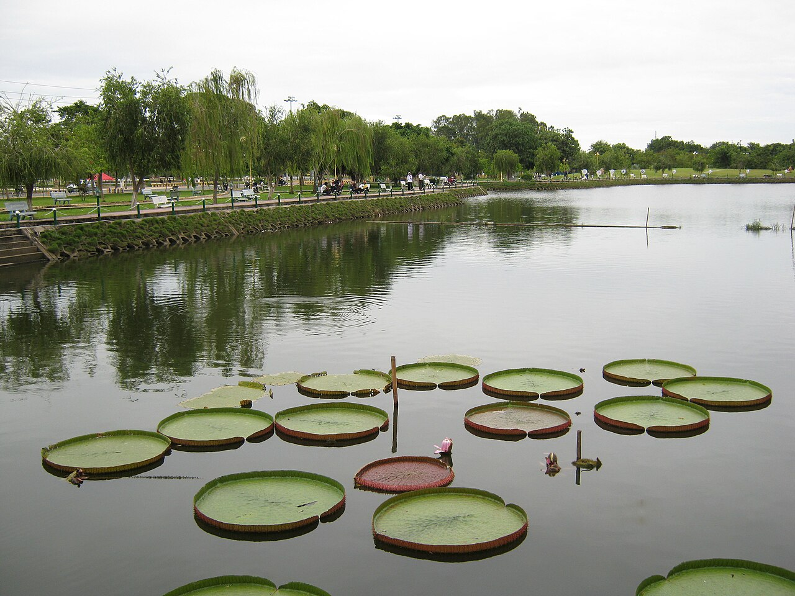
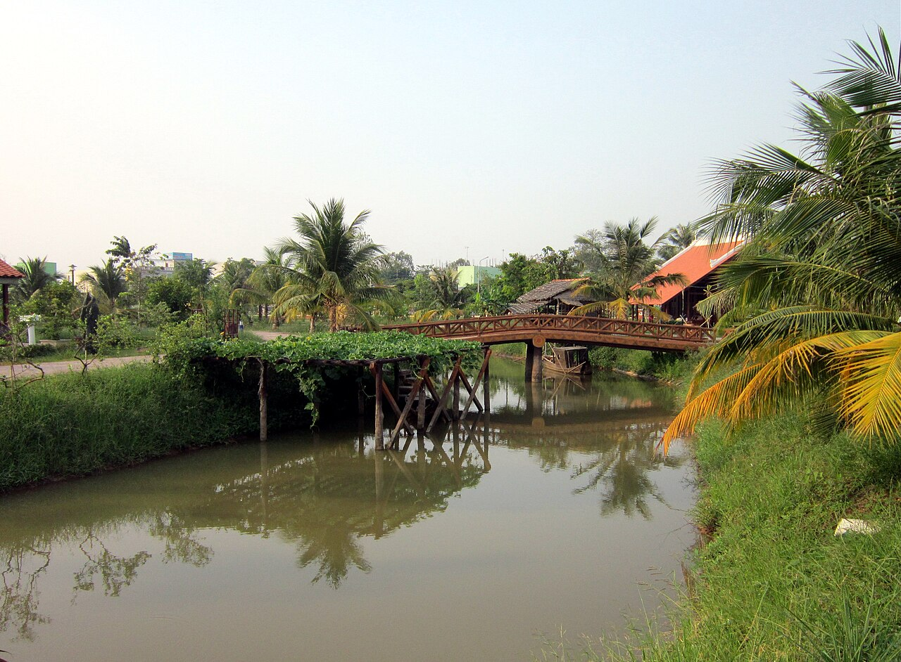
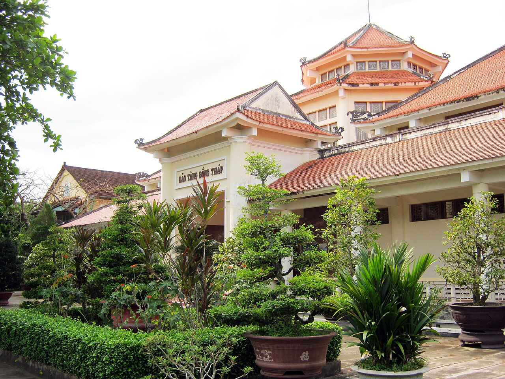
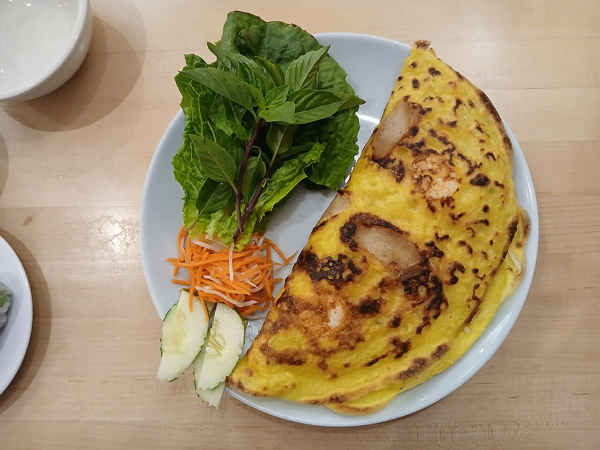
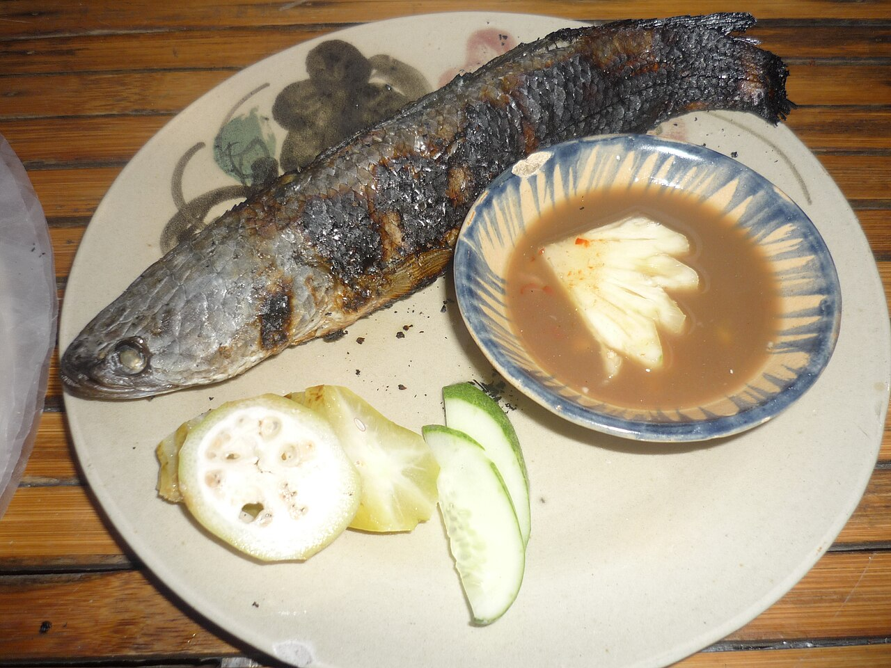
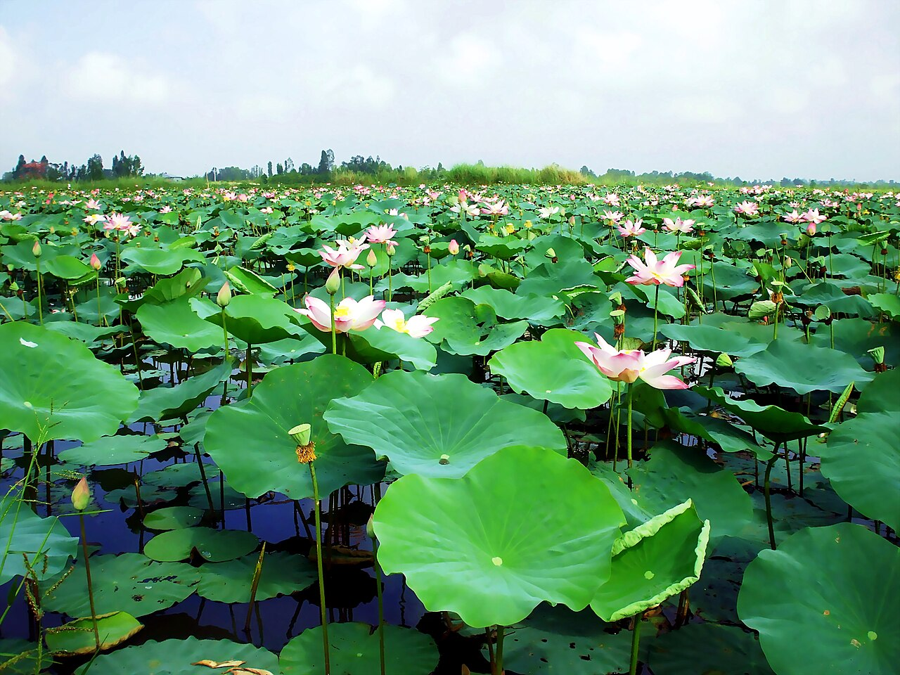

Chào Mừng Đến Với
Phường Cao Lãnh
Nơi hội tụ tinh hoa Đất Sen Hồng bên dòng Tiền Giang trĩu nặng phù sa. Sự kết tinh giữa bề dày lịch sử khai hoang hào hùng, nét đẹp sinh thái miệt vườn trù phú và nhịp sống đô thị văn minh, hiện đại.
Vùng Đất Năng Động Bên Dòng Tiền Giang
Phường Cao Lãnh giữ vị trí trái tim đô thị của tỉnh Đồng Tháp, nơi giao thoa của sông nước miệt vườn thanh bình với không gian phát triển kinh tế số, dịch vụ hiện đại và cội nguồn văn hóa trăm năm.
Vị Trí Trung Tâm Chiến Lược
Tọa lạc tại trung tâm đô thị tỉnh Đồng Tháp; phía Đông giáp Mỹ Thọ, phía Tây và Nam giáp sông Tiền kết nối An Giang, phía Bắc giáp Mỹ Ngãi và Mỹ Trà; kết nối huyết mạch qua Cầu Cao Lãnh.
Bản Sắc Đất Sen Hồng
Mang đậm nét đẹp thuần khiết của hoa sen - biểu tượng niềm tự hào của con người Đồng Tháp nghĩa tình, năng động, sáng tạo và hiếu khách.
Hệ Sinh Thái Trù Phú
Sở hữu những miệt vườn cây ăn trái quanh năm trĩu hạt phù sa ven sông Tiền, đặc biệt là thủ phủ Xoài Cát Chu và Cát Hòa Lộc đạt chứng nhận Chỉ dẫn địa lý và chuẩn OCOP xuất khẩu quốc tế.
An Toàn Khu & Đô Thị Xanh
Vùng đất An toàn khu lịch sử cách mạng hào hùng, kết hợp hệ thống công viên Văn Miếu, hồ sen sinh thái tạo nên chất lượng sống yên bình và phát triển bền vững.
Hợp Nhất 09 Đơn Vị Hành Chính (Từ 01/07/2025)
Thực hiện chủ trương sắp xếp đơn vị hành chính cấp xã giai đoạn 2023 - 2025 theo Nghị quyết số 1663/NQ-UBTVQH15 ngày 16/06/2025 của Ủy ban Thường vụ Quốc hội, Phường Cao Lãnh chính thức đi vào hoạt động từ ngày 01/07/2025 trên cơ sở hợp nhất toàn bộ diện tích và dân số của 9 đơn vị thành viên:
Số 03, Đường 30 Tháng 4, Phường Cao Lãnh, Tỉnh Đồng Tháp
Bí thư Đảng ủy, CT HĐND: Ông Nguyễn Hùng Tráng | Chủ tịch UBND: Ông Bùi Quốc Nam
Điểm Đến & Di Sản Nổi Bật
Khám phá những địa danh mang đậm giá trị lịch sử thiêng liêng, vẻ đẹp sinh thái sông nước ngút ngàn và công trình biểu tượng hiện đại tại Phường Cao Lãnh.
 Di Tích Lịch Sử
Di Tích Lịch Sử
Khu Di Tích Cụ Phó Bảng Nguyễn Sinh Sắc
Nơi yên nghỉ của thân sinh Chủ tịch Hồ Chí Minh vĩ đại, được xếp hạng Di tích quốc gia đặc biệt. Quần thể gồm lăng mộ hình vòm cánh sen mở rộng, đền thờ uy nghiêm, nhà sàn Bác Hồ tỉ lệ 1:1 và không gian Làng Hòa An xưa mộc mạc đậm chất Nam Bộ.
Đền Thờ Ông Bà Đỗ Công Tường
Nơi phụng thờ cụ Đỗ Công Tường (ông Câu Lãnh) cùng vợ có công lập chợ Vườn Quýt (1817) và hy sinh cầu xin chết thay cho nhân dân trong đại dịch tả (1820). Di tích Lịch sử - Văn hóa Quốc gia gắn liền với cội nguồn tên gọi Cao Lãnh; lễ giỗ mùng 8-10/6 âm lịch hằng năm thu hút hàng vạn khách thập phương.
Cầu Cao Lãnh - Cửa Ngõ Bờ Bắc Sông Tiền
Cây cầu dây văng hiện đại tráng lệ bắc qua dòng Tiền Giang mênh mông, kết nối giao thông huyết mạch của vùng Đất Sen Hồng. Hệ thống chiếu sáng mỹ thuật rực rỡ sắc hồng hoa sen biến cây cầu thành biểu tượng kiến trúc mới đầy kiêu hãnh của thành phố.

Đô Thị XanhCông Viên Văn Miếu & Hồ Khổng Tử
Lá phổi xanh ngát giữa trung tâm phường với Văn Thánh Miếu ghi danh truyền thống hiếu học của Đất Sen Hồng. Quần thể hồ Khổng Tử trong lành nổi tiếng với những tán sen nia khổng lồ (sen vua Victoria) và đường dạo bộ thoáng mát mỗi sớm chiều.

Du Lịch Sinh TháiCù Lao Sinh Thái Tân Thuận Đông
Viên ngọc xanh giữa dòng sông Tiền mênh mông bồi đắp phù sa. Du khách được hòa mình vào không gian miệt vườn rợp bóng nhãn, xoài, trải nghiệm chèo xuồng ba lá, đạp xe qua những con đường làng râm mát và thưởng thức món ngon dân dã tại "Chợ quê Tân Thuận Đông" dịp cuối tuần.
 Vườn Cây Trái
Vườn Cây Trái
Vườn Xoài Cát Chu & Tân Thuận Tây
Thủ phủ của giống Xoài Cát Chu và Xoài Cát Hòa Lộc nức tiếng được cấp chứng nhận Chỉ dẫn địa lý. Du khách được tận mắt chiêm ngưỡng những vườn xoài trĩu quả, thưởng thức xoài chín cây ngọt thanh và trải nghiệm mô hình số hóa "Cây xoài nhà tôi" độc đáo đạt chuẩn xuất khẩu quốc tế.

Bảo Tàng Lịch SửBảo Tàng Tỉnh Đồng Tháp
Nơi lưu giữ và phát huy giá trị của hơn 30.000 hiện vật lịch sử, cổ vật văn hóa Óc Eo quý hiếm hàng đầu Nam Bộ. Không gian trưng bày hiện đại tái hiện sinh động văn hóa truyền thống cư dân Đồng Tháp Mười và trang sử đấu tranh cách mạng bất khuất.

Hương Vị Ẩm Thực Khó Quên
Đến với Phường Cao Lãnh, du khách không chỉ say đắm lòng người bởi cảnh sắc thanh bình mà còn ngất ngây bởi tinh hoa ẩm thực dân dã nhưng đậm đà thi vị của Đất Sen Hồng.
Bánh Xèo Cao Lãnh
Vỏ bánh giòn rụm màu vàng nghệ thơm nước cốt dừa, nhân thịt vịt xiêm băm hoặc tôm thịt cùng củ hủ dừa ngọt mát, cuốn cùng hơn 20 loại rau vườn non ven sông Tiền. Tuyến phố ẩm thực đường Lê Duẩn là điểm hẹn ẩm thực nức tiếng gần xa.

Cá Lóc Nướng Trui Cuốn Lá Sen Non
Cá lóc đồng nướng rơm thơm lừng đậm chất khẩn hoang Nam Bộ, thịt cá ngọt béo được cuộn trong búp lá sen non thoang thoảng vị chát dịu, chấm nước mắm me sệt dầm ớt hiểm cay nồng đậm đà khó cưỡng.
Xoài Cát Chu Cao Lãnh Trứ Danh
Mùi thơm nồng nàn, thịt chắc vàng ươm, dẻo ngọt đậm đà, hạt nhỏ, vỏ mỏng, không xơ - đặc sản được Cục Sở hữu trí tuệ cấp chứng nhận Chỉ dẫn địa lý và đạt chuẩn OCOP xuất khẩu sang Nhật Bản, Hoa Kỳ, EU.

Mỹ Vị Từ Hoa Sen Đất Sen Hồng
Cơm hấp lá sen hạt sen thơm bùi, gỏi ngó sen tôm thịt chua ngọt giòn giòn, chè hạt sen long nhãn thanh mát giải nhiệt và tách trà hoa sen Cao Lãnh ướp hương sông nước trời mây.
Ủy Ban Nhân Dân Phường Cao Lãnh
Tra cứu thông tin cơ quan hành chính, vị trí địa lý và các kênh dịch vụ công trực tuyến phục vụ người dân, doanh nghiệp và du khách.
Thông Tin Cơ Bản
- Cơ quan quản lý: Ủy ban nhân dân Phường Cao Lãnh
- Địa chỉ trụ sở: Số 03, Đường 30 Tháng 4, Phường Cao Lãnh, Tỉnh Đồng Tháp
- Căn cứ pháp lý: Nghị quyết số 1663/NQ-UBTVQH15 của Ủy ban Thường vụ Quốc hội
- Ngày vận hành chính thức: 01 tháng 07 năm 2025
- Vị thế lịch sử: Xã/Phường An Toàn Khu (Quyết định số 2278/QĐ-UBND của UBND tỉnh Đồng Tháp)
- Diện tích tự nhiên: 73,33 km²
- Dân số & Mật độ: 137.387 người (Mật độ 1.873 người/km²)
- Địa bàn trực thuộc: 39 khu phố văn minh đô thị
- Lãnh đạo chủ chốt: Bí thư Đảng ủy: Ông Nguyễn Hùng Tráng | Chủ tịch UBND: Ông Bùi Quốc Nam
- Giờ làm việc: Thứ 2 - Thứ 6 (07:00 - 11:30 | 13:30 - 17:00)
- Hotline hành chính: 1900 1022 (Tổng đài dịch vụ công Đồng Tháp)